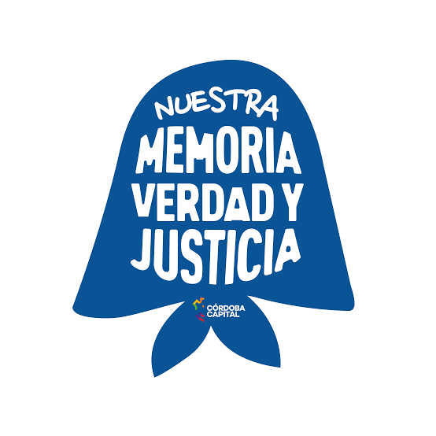
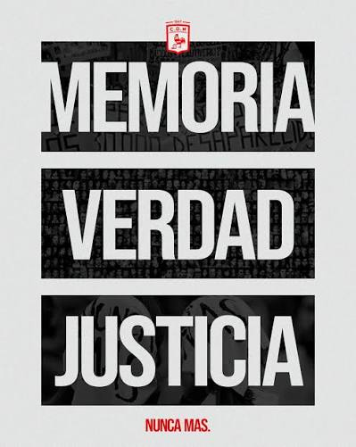
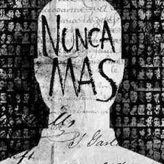

Memoria, Verdad y Justicia



Memoria, Verdad y Justicia es una política y un compromiso de la sociedad argentina para recordar a las víctimas de la última dictadura cívico-militar (1976-1983), conocer la verdad sobre lo ocurrido y garantizar que los responsables sean juzgados para que estos hechos nunca vuelvan a repetirse.
Línea de tiempo
24/03/1976
Golpe de Estado. Comienza la última dictadura cívico-militar.
1976
Se inicia el terrorismo de Estado con secuestros, torturas y desapariciones.
1977
Las Madres de Plaza de Mayo realizan su primera ronda.
1977
Se crea el grupo Abuelas de Plaza de Mayo para buscar a los niños apropiados.
1982
La Guerra de Malvinas acelera el fin de la dictadura.
1983
Regresa la democracia con la elección de Raúl Alfonsín.
1984
La CONADEP publica el informe Nunca Más.
1985
Se realiza el histórico Juicio a las Juntas Militares.
2003-2006
Se anulan las leyes de impunidad y vuelven los juicios por delitos de lesa humanidad.
Actualidad
Cada 24 de marzo se conmemora el Día Nacional de la Memoria por la Verdad y la Justicia.
Lugares importantes
Espacio Memoria y Derechos Humanos (ex ESMA)
- Fue uno de los mayores centros clandestinos de detención durante la dictadura.
- Actualmente funciona como sitio de memoria y museo.
Plaza de Mayo
- Lugar donde las Madres y Abuelas de Plaza de Mayo realizaron y continúan realizando sus marchas.
Parque de la Memoria
- Monumento dedicado a las víctimas del terrorismo de Estado.
Archivo Nacional de la Memoria
- Conserva documentos y testimonios relacionados con las violaciones a los derechos humanos.
Historias destacadas
Madres de Plaza de Mayo
Comenzaron a reunirse en 1977 para exigir información sobre el paradero de sus hijos desaparecidos. Sus rondas alrededor de la Plaza de Mayo se convirtieron en un símbolo mundial de la defensa de los derechos humanos.
Abuelas de Plaza de Mayo
Buscaron y continúan buscando a los niños apropiados durante la dictadura. Gracias a su trabajo, más de un centenar de personas recuperaron su verdadera identidad.
El informe "Nunca Más"
La CONADEP reunió miles de testimonios sobre desapariciones forzadas. El informe permitió documentar los crímenes cometidos y sirvió como prueba en los juicios.
Información importante
- Se estima que hubo alrededor de 30.000 personas desaparecidas.
- Existieron más de 600 centros clandestinos de detención en todo el país.
- Durante la dictadura hubo censura a la prensa, persecución política y prohibición de diversas expresiones culturales.
- Muchas personas fueron secuestradas sin juicio y permanecen desaparecidas.
- El derecho a la identidad fue uno de los principales reclamos de las Abuelas de Plaza de Mayo.
- Argentina es reconocida internacionalmente por llevar adelante juicios por delitos de lesa humanidad.
Conocé más sobre la ex ESMA
El Espacio Memoria y Derechos Humanos (ex ESMA) funciona actualmente como un sitio de memoria, reflexión y promoción de los derechos humanos. Allí se desarrollan actividades educativas, culturales y recorridos guiados para mantener viva la memoria colectiva.
Sumate a la iniciativa
Si querés participar en actividades de memoria, educación y promoción de los derechos humanos, dejanos tus datos. Toda colaboración ayuda a mantener vivo el compromiso con la Memoria, la Verdad y la Justicia.